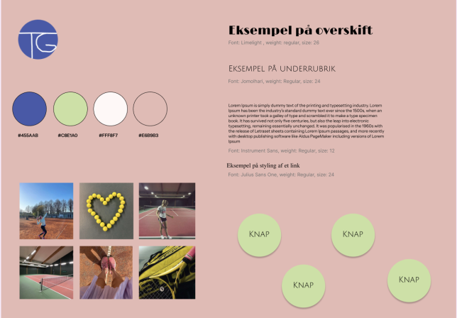

GRUNDLÆGGENDE UX/UI
Temaet
I dette tema skulle vi udarbejde vores eget emnesite. Her blev vi introduceret til Figma, som det primærere værktøj, som vi skulle arbejde i. Emnet måtte vi helt selv bestemme, så jeg valgte, at lave et site om tennisguide for begyndere.

Process
Det første jeg gjorde i min process var, at jeg begyndte med en desk research for at forstå målgruppen og indholdet. Herefter lavede jeg en brainstorm og udarbejdede moodboards og styletiles for at fastlægge det visuelle udtryk. Jeg designede både low-fi og hi-fi wireframes og skabte en klikbar prototype i Figma, som visualiserede brugerflowet.
Jeg brugte en 5 sekunders test til, at måle førstehåndsindtrykket af mit site, mens en tænke-højt test gav indsigt i, hvordan brugere navigerede og forstod indholdet. Derudover udførte jeg en heuristisk evaluering samt en Lighthouse-test for at vurdere både brugervenlighed og teknisk ydeevne. Gennem en gentagen proces med løbende tests og forbedringer sikrede jeg, at mit site blev både intuitiv at bruge og visuelt sammenhængende.
Læring
I dette UX/UI-tema føler jeg, at jeg har fået en praktisk forståelse for, hvordan man designer brugervenlige digitale løsninger på forskellige interfaces. Gennem research og idéudvikling lærte jeg at tage udgangspunkt i brugerens behov. Jeg arbejdede med low-fi og hi-fi wireframes, styletiles og prototyper i Figma og brugte forskellige tests til løbende at forbedre designet. Forløbet har givet mig en praktisk forståelse for, hvordan man kan kombinere funktion og æstetik i et brugervenligt digitalt produkt.
Løsning
Jeg udviklede et emnesite, der blev til en tennisguide for begyndere på en enkel og overskuelig måde. Designet blev skabt med fokus på målgruppens behov og udviklet gennem wireframes, styletiles og prototyper i Figma. Den visuelle stil blev valgt for at skabe en rød tråd i både layout og farvevalg, som understøttede indholdet. Gennem brugertests foretog jeg flere iterationer dvs. løbende forbedringer og justeringer baseret på den feedback jeg fik for, at finjustere funktionaliteten og sikre en sammenhængende og brugervenlig oplevelse.